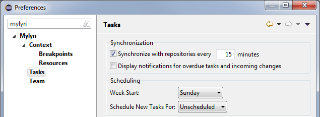
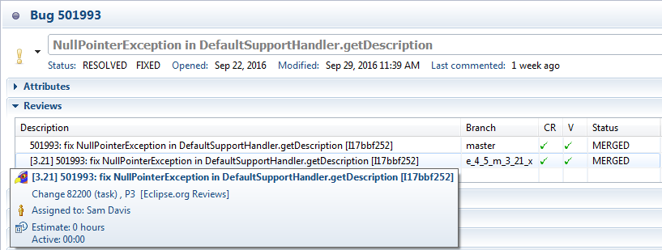

| Release | Resolved | Merged | Community Contributions |
| 3.21 October 7, 2016 |
44 bugs |
101 reviews |
Community contributions were
provided by Brandon Dong, Jason Thompson, and Lars Vogel.
Includes: Mylyn 3.21, Mylyn Builds 1.13, Mylyn Commons 3.21, Mylyn Context 3.21, Mylyn Docs 2.10, Mylyn Reviews 2.12. Mylyn Tasks 3.21, Mylyn Versions 1.13. |
NOTE: Mylyn 3.21 requires Java 1.8 or later and supports Eclipse 4.5 and 4.6. See the download page for repository locations.
|
Scheduling New Tasks |
The scheduled date for newly created tasks can be configured in preferences under Mylyn > Tasks.  |
|
Reviews Table |
The reviews section in the task editor shows the branch of each review and uses the same rich tooltip as the task list.  |
|
Jenkins 2.7.3 |
Jenkins 2.7.3 is now supported. |